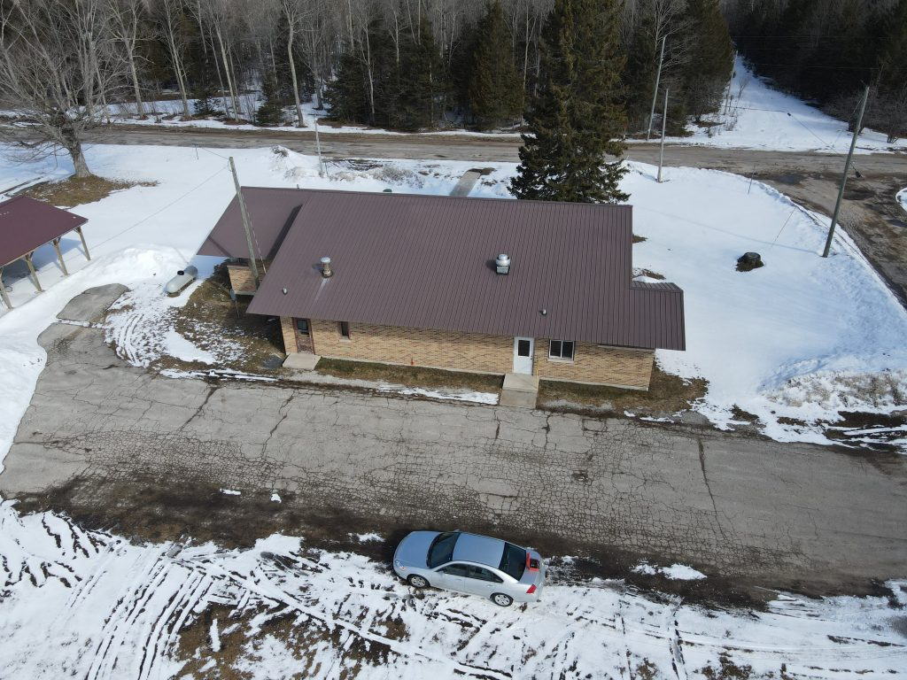

The Mueller Township Board is thrilled to announce a complete modernization of our website at www.muellertownship.com!
Our goal with this redesign was simple: to build a high-quality website for a high-quality community. We have upgraded to a lightning-fast, highly reliable modern web platform that beautifully showcases the nature and character of our township while ensuring you have seamless, uninterrupted access to critical information.
This upgraded site will serve as the primary hub for both residents and visitors alike. Whether you are looking for the latest announcements, community events, meeting notices, meeting minutes, ordinances, or election information, you will find it easily accessible right here.
We've also rolled out a brand-new blog system to keep you better informed and support community discussion. We look forward to continuing to improve the resources available to our wonderful community!
Comments
Note: Comments require a GitHub account to post. You will need to sign in with GitHub.